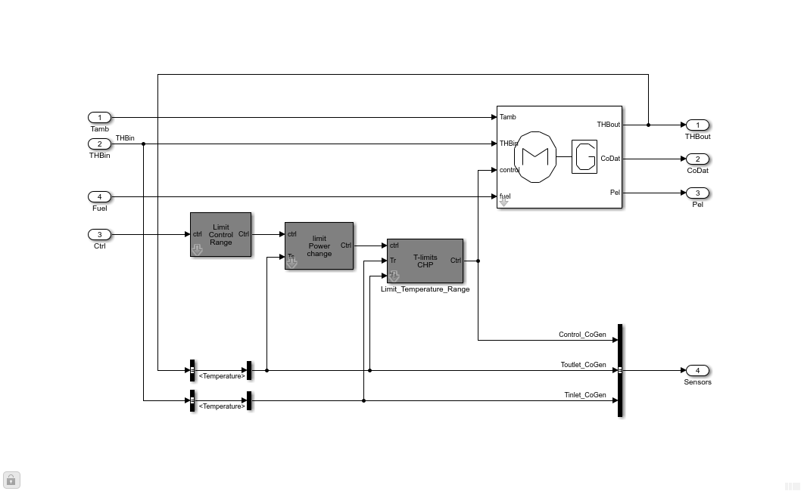
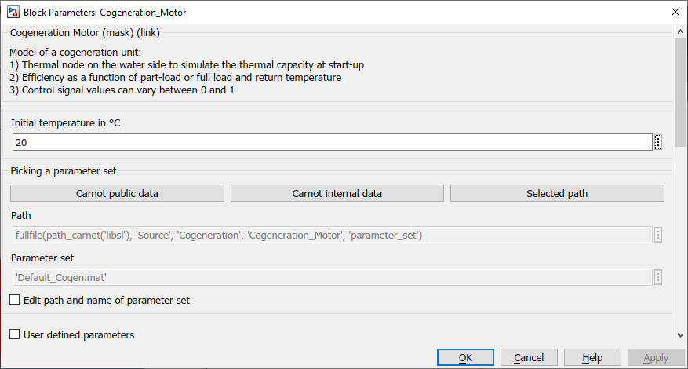
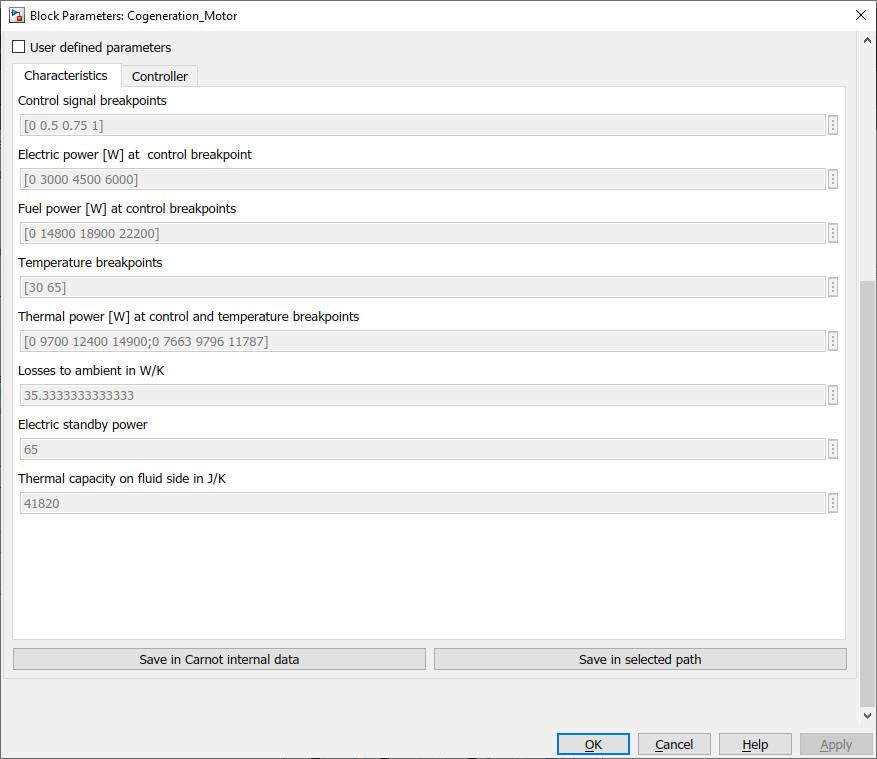
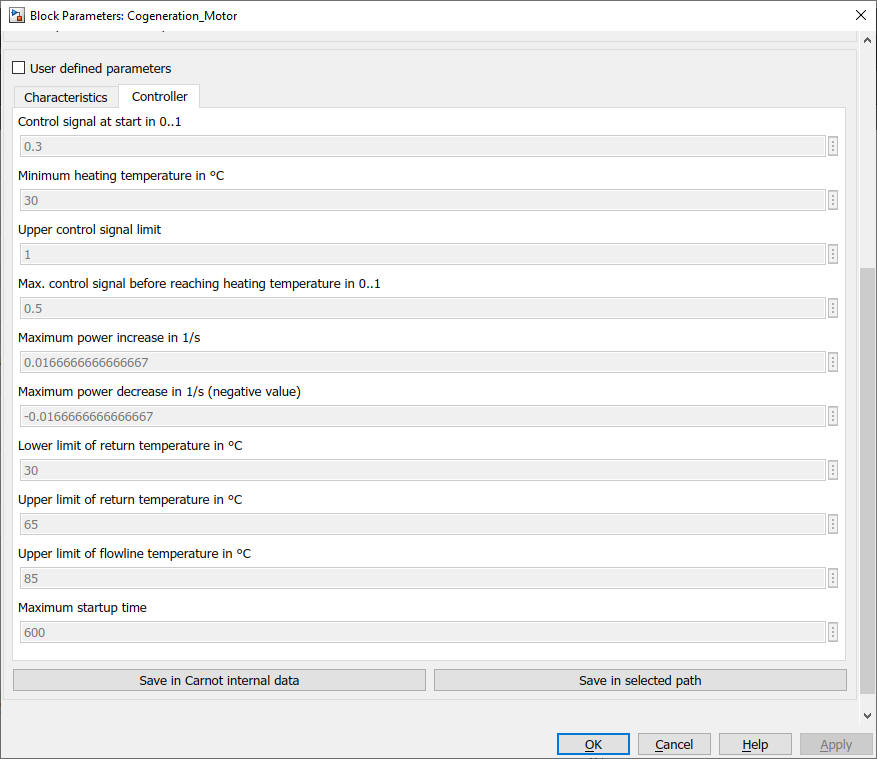

Cogeneration_Motor
Path: CARNOT/Source/Cogeneration
Purpose:
Model of a cogeneration unit with a gas motor.
Description:
The model uses the Cogeneration_Basic
for the thermal and electrical model. Limit Control Range blocks are used
to supervise the envelope conditions.

Input:
| Tamb | : | ambient temperature of the surrounding in °C |
| THB | : | Thermo-Hydraulic Bus of the return line |
| Ctrl | : | Control signal setpoint (0 = off ... 1 = full power) |
| Fuel | : | Fuel bus, use Fuel block to create the bus |
Output:
| THBout | : | Thermo-Hydraulic Bus of the flow line |
| CoDat | : | Data bus of cogeneration unit, see Cogeneration_Basic for details. |
| Pel | : | electric power output in W |
| Sensors | : | Sensor data bus. |
The sensor data bus "Sensors" has the data points:
Control_CoGen - current control signal
Toutlet_ConGen - outlet (flow line) temperature in °C
Tinlet_ConGen- inlet (return line) temperature in °C
Parameters and Dialog Box:



Choose the boiler parameter set in the mask from carnot public data files,
internal data files or any other selected path. You may edit a parameter
set and save it under a new name. Typically these new parameter sets are
stored in the carnot internal data path or your project path.
For details see chapter
2.2.1 Choosing parameter sets for configurated models
Examples:
Open the example explorer from the Matlab command window
ExampleBrowser
or load the examples via the CARNOT library.
Characteristics:
| Direct Feedthrough | : | Yes |
| Sample Time | : | Inherited from driving block |
| Vectorized | : | No |